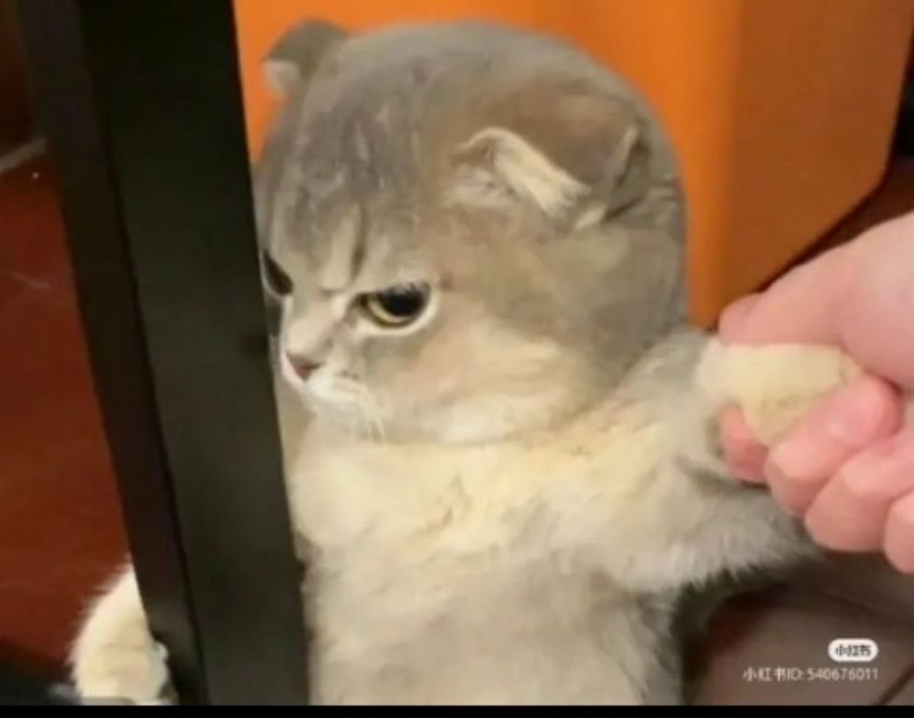
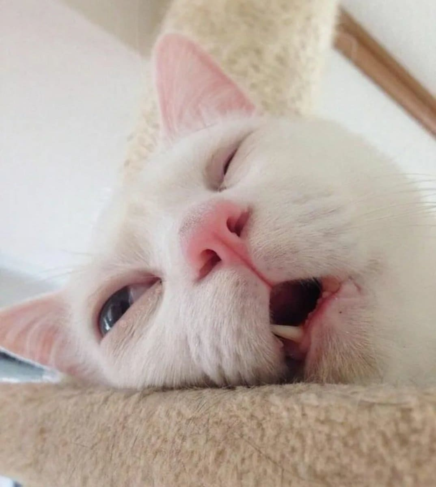

Бұл дүние баяғыда жасалуы керек еді бірақ мен енді жасап отырмын
.png)
Ол кезден менің есімнен кетпейді. Сенің үстіңде аппақ рубашка болған еді. Сыныпқа кіріп келгенде, алғашқыда бізде оқитыныңа сенбегенмін. Өйткені, түрің үлкен қыздарға ұқсайтын. Сол кезде ойыма келген нәрсе менде шанс жоқ...
Себебі, мұндай сұлулықты ешқашан көрмеген едім. Жабайысың ғо крч. Сонымен таң қалып, бұл қызбен танысу керек дедім. Сөйтіп тормоздығым ұстамай, вкнды сұрап алдым. Өзім шокпын ғой айбыыыыыыыыыыыыыыыыыый
Мен сол күйі сенімен жақын бола алмадым. Керісінше, алыстап кеттім. Бірақ өмір шіркін өте қызық. Біздің жолдарды 11 - сыныпта тоғыстырды. Неге екенін білмеймін бір күні қосымшадан қайтып бара жатып, сен есіме түстің. Инстаграмыңды іздеп, саған жаздым. Неге инстаграм? Өйткені мені ватсаптан чсқа тығып жіберген.
Өзімнің өтпейтін әзілдерімді тығып, сенімен қайтадан араласып кеттім. Содан 1-2 айдан соң, сені жақсы көретінімді түсіндім. Бар жігерді жинап, түнде әңгіменің арасында сені жақсы көремін деп тығып жібедім. Сен қайтадан сұрадың. Мен ия дедім. Басында ойлағаным ой бәрібір маған қарамайды, керек емес шығармын дегенмін. Бірақ сенің жауабың таң қалдырды. 5 минуттан кейінгі салған сторисың де сенің взаимно сезімің бар екеніне дәлел болды. Қатты қуандым, сене алар емеспін...
Сонымен уақыт өте берді ал мен ғашық бола бердім. Содан қызық, январьда сөз салдым. Сен ия дедің. Кайф боп қалғансың ғо крч. Бірақ отношение үлкен жүк секілді көрінді. Себебі, қыз деген өте нәзік жанды ренжітпей ұстау оңай емес еді. Бірақ мен бұл нәрсемен сәтті айналыстым десем болады шығар әәә?!
Маған ренжіп қалғанда
Ашуланғанда
Ұйқыдан 12 де тұрғанда

Мен еркелеткенде